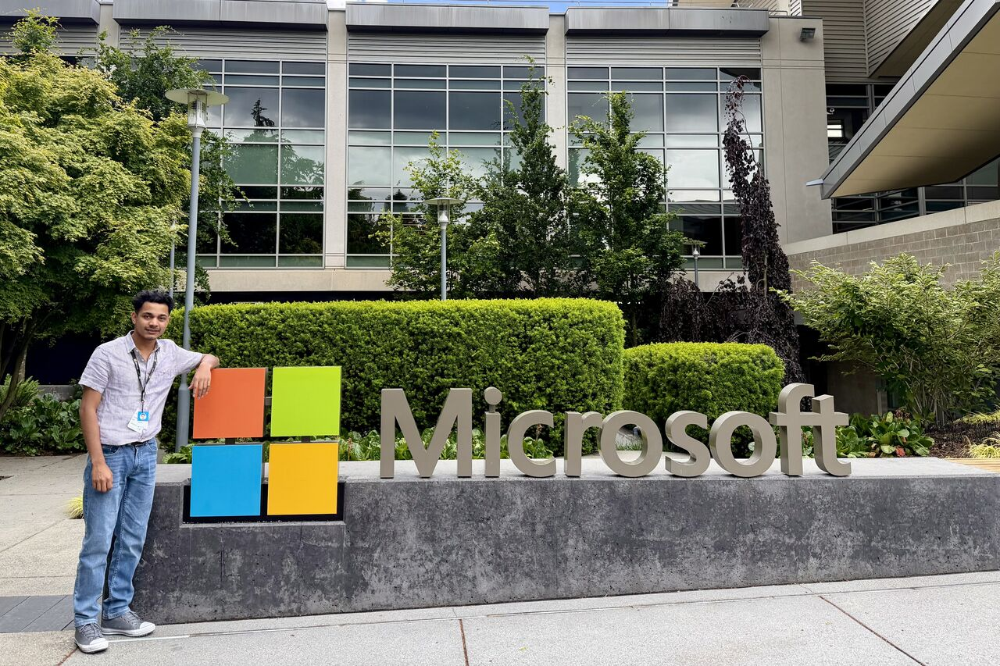
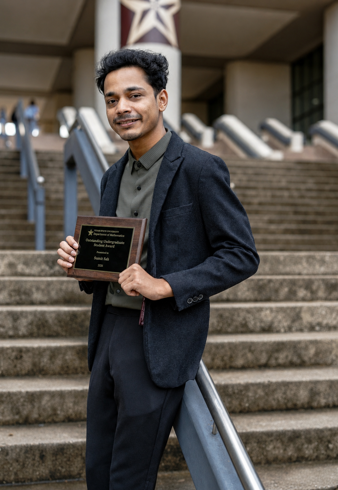
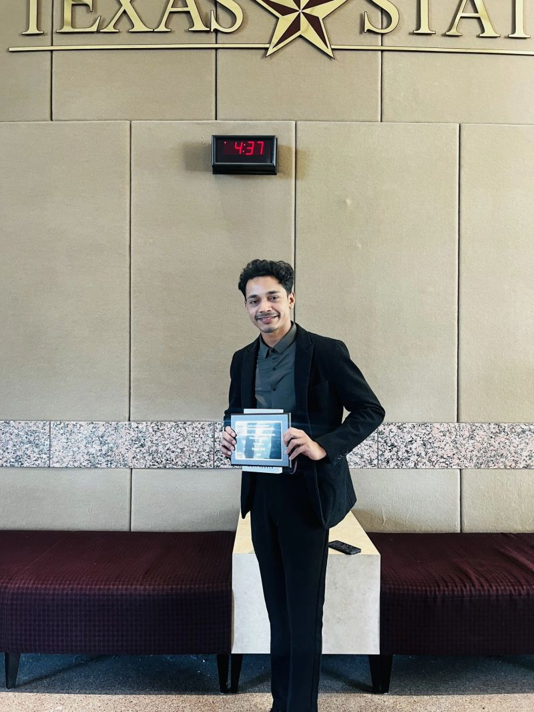
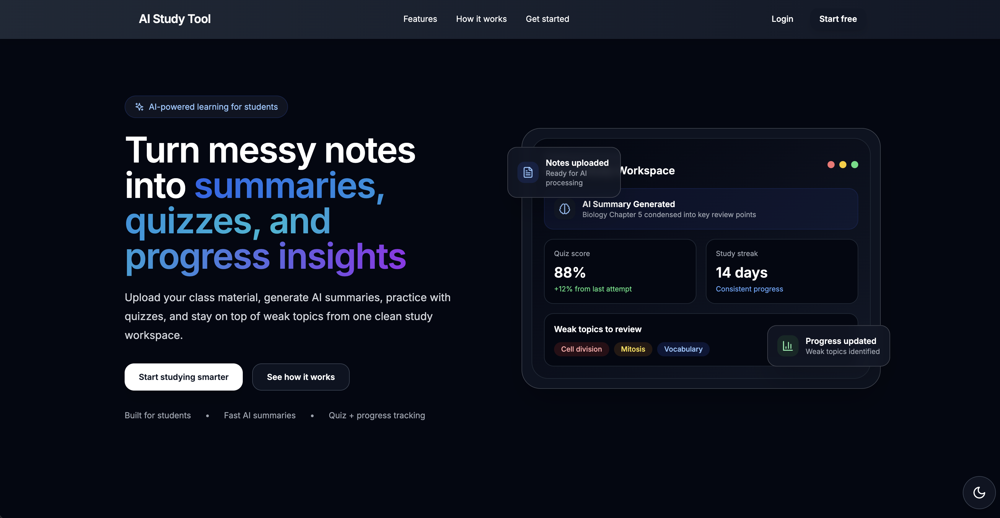
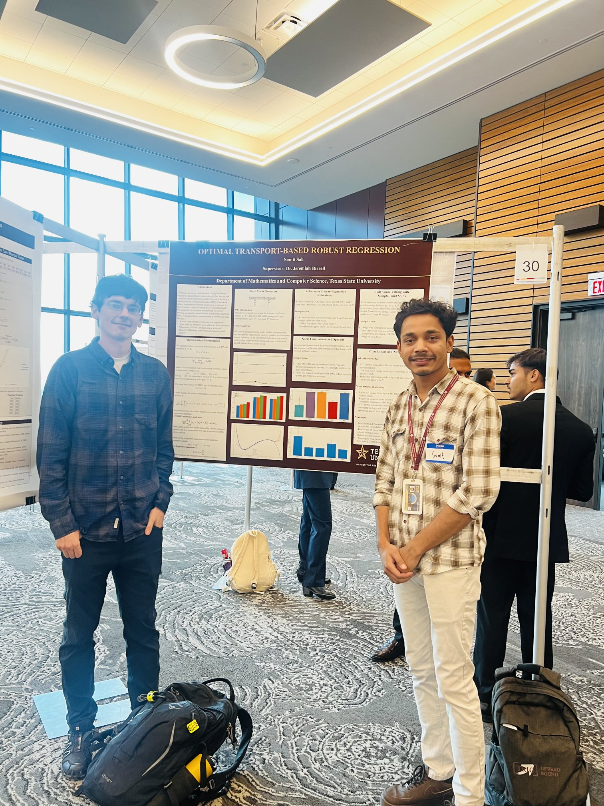
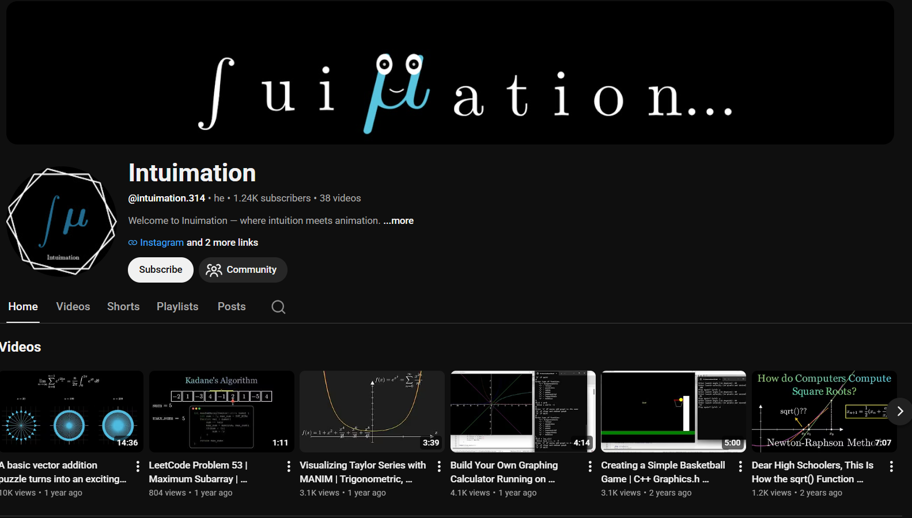

Career Highlight
Machine Learning Engineering Internship
Working as an MLE Intern at Microsoft, contributing to ODSP systems and improving retrieval quality for Copilot grounding workflows.
Computer Science • Applied Mathematics • Machine Learning
|
I build machine learning, data visualization, and mathematical storytelling projects that connect code, research, and creativity.

I am an aspiring machine learning and data scientist with a simple motivation: I love figuring out how things work. Ever since I was a kid, I have enjoyed solving math problems not just for answers, but to understand the reason behind them. Programming made that curiosity practical, and that blend of math and code naturally pulled me toward machine learning.
What excites me most is how computers can learn, adapt, and mimic parts of human intelligence. I am especially interested in the algorithms, optimization methods, and decision processes that make this possible. That curiosity has guided everything I have done, from regression and classification modeling to AI robustness research.
At Texas State University, my work focuses on the mathematical side of machine learning. I study optimization methods such as gradient descent and stochastic gradient descent, and deep learning architectures including CNNs and ResNets. I use Python and PyTorch for experimentation, and document results in LaTeX and GitHub.
Outside research, I enjoy sharing what I learn through blogs, Manim animations, and YouTube videos. I also spend time solving algorithmic problems on LeetCode and Codeforces. For me, learning is not just about building skills - it is also about sparking curiosity and helping others.

Career Highlight
Working as an MLE Intern at Microsoft, contributing to ODSP systems and improving retrieval quality for Copilot grounding workflows.

Achievement Highlight
Recognized by the Texas State Mathematics Department for academic excellence, leadership, and campus impact through research, datathon, and math club work.
Link Highlight
Create visual-first lessons with Manim to make math, physics, and computer science concepts intuitive, engaging, and easier to retain.
Microsoft (Full-time) - Redmond, Washington, United States (On-site)
May 2026 - PresentCollaborating with the ODSP-DEEDS team to improve hierarchical RAG systems for stronger Copilot grounding. Evaluating diverse query sets for container summarization and semantic search, and comparing flat vs hierarchical retrieval to improve retrieval quality and optimize recall.
Texas State University Libraries (Part-time) - San Marcos, Texas, United States (On-site)
Aug 2025 - May 2026Assisted students, faculty, and staff with analysis and visualization for research projects, supported DataSpace documentation and tutorials, improved metadata in TXST Dataverse, and helped run workshops and outreach activities.
TXST Math - San Marcos, Texas, United States (On-site)
May 2025 - May 2026Focused on mathematical foundations and implementation of machine learning methods. Developed and tested optimization algorithms (Gradient Descent, SGD), built PyTorch models (fully connected, CNNs, ResNets), and designed experiments across architectures and parameter counts.

Built an AI-powered study assistant for software engineering coursework with quiz generation based on notes, progress tracking through charts, weak-topic detection, quiz history retrieval, and visual analytics. Also supported viewing past quiz attempts, reviewing previous answers, and retaking quizzes to reinforce learning.

Researched adversarial robustness using optimal transport-based models and explored how deep learning robust training techniques can be adapted to classical regression settings for stronger stability and performance. The poster shown here was presented at the Texas State undergraduate research conference.

Create visual-first educational videos using Manim to make mathematics, physics, and computer science concepts intuitive, engaging, and easier to understand. Feel free to DM for collaboration!

TXST Datathon 2025 (3rd Place): analyzed 20K+ RateMyProfessor reviews using Python, Pandas, and Matplotlib to identify bias in grading leniency, sampling, and review extremity. Created 5+ visualizations and presented actionable recommendations to improve fairness in student evaluations.
Built and evaluated classification models to predict credit default risk, including Logistic Regression, Random Forest, and XGBoost. The workflow includes EDA, class-imbalance handling (SMOTE and undersampling), and evaluation with ROC AUC, confusion matrix, precision, recall, and F1 score.
Replace these image files in assets/images with your own photos.
Profile portrait - replace with your own caption.